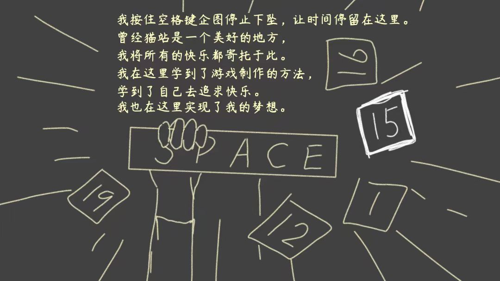
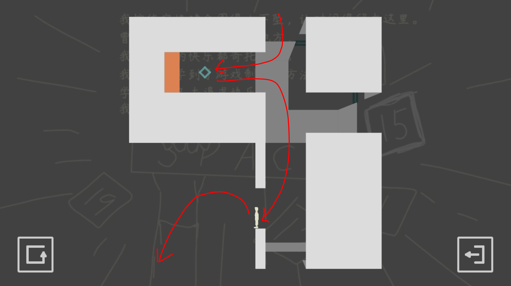
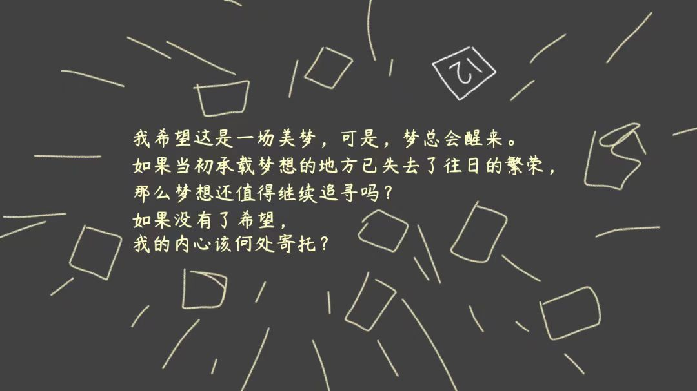
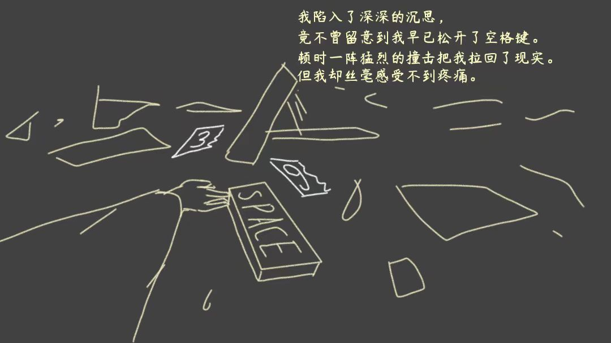
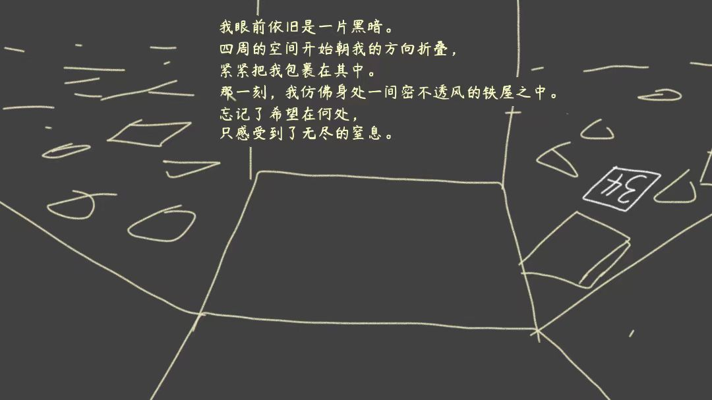
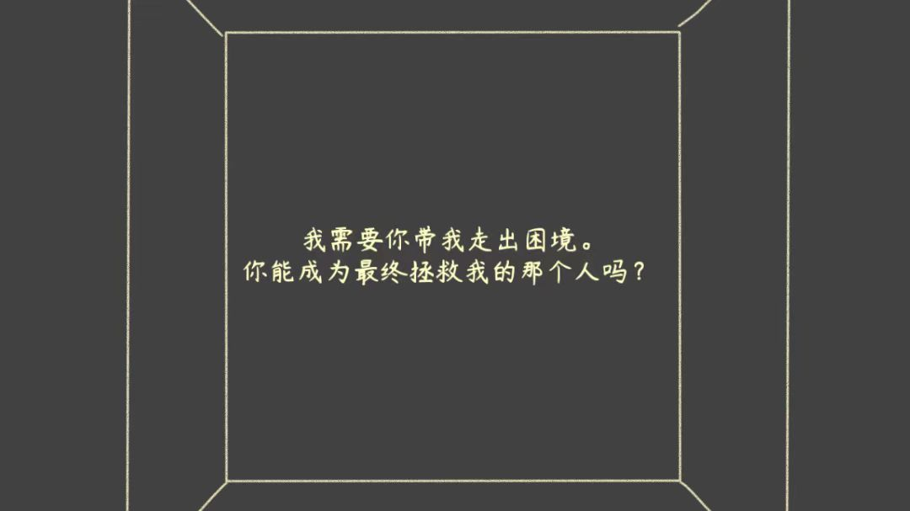

|  | 第21关我按住空格键企图停止下坠，让时间停留在这里。 曾经猫站是一个美好的地方， 我将所有的快乐都寄托于此。 我在这里学到了游戏制作设计的方法， 学到了自己去追求快乐。 我也在这里实现了我的梦想。 |
|
过关攻略（15次旋转）： 左下左→进入内部→右下→“关键一步”→ 下左下下右下→空中往左进入内部→左左下右→进门通关 中间的“关键一步”是这么走的：  |
|
|  |
第22关我希望这是一场美梦，可是，梦总会醒来。 如果当初承载梦想的地方已失去了往日的繁荣， 那么梦想还值得继续追寻吗？ 如果没有了希望， 我的内心该何处寄托？ |
过关攻略（12次旋转）： 蓝紫→蓝黄绿→黄绿→紫黄绿→紫蓝（注意进入的方向）→进门通关 |
|
|  | 第23关我陷入了深深的沉思， 竟不曾留意到我早已松开了空格键。 顿时一阵猛烈的撞击把我拉回了现实。 但我却丝毫感受不到疼痛。 |
过关攻略（36次旋转，这里的数字方框被摔成了两半）： 竖直绕一圈，进入右侧上层通道→关闭蓝→ 向左折返回，踩在蓝色平台上，向右进入下层通道→打开紫→ 向左折返回，掉下去→打开粉→ 竖直绕一圈，回到蓝色平台往左走→打开黄→ 竖直绕一圈，进入右侧上层通道→打开蓝→ 向右走→竖直绕半圈→向右关闭绿→ 竖直绕一圈，进入左侧上层通道→向左绕到另一边→ 竖直绕一圈，踩在左侧绿色平台上→向左进门通关 |
|
|  | 第24关我眼前依旧是一片黑暗。 四周的空间开始朝我的方向折叠， 紧紧把我包裹在其中。 那一刻，我仿佛身处一间密不透风的铁屋之中。 忘记了希望在何处， 只感受到了无尽的窒息。 |
过关攻略（34次旋转）： 打开蓝→打开黄→关闭蓝→站在蓝色平台上跳起打开绿→打开蓝→关闭黄→关闭蓝→进门通关 为了不浪费旋转次数，需要在每次触碰蓝色开关之后，先想清楚往哪边离开 |
|
|  | 第25关我需要你带我走出困境。 你能成为最终拯救我的那个人吗？ |
过关攻略（8次旋转，这关没有数字方框）： 极限操作向右跳→右下下左下下下下→进门通关 |
|